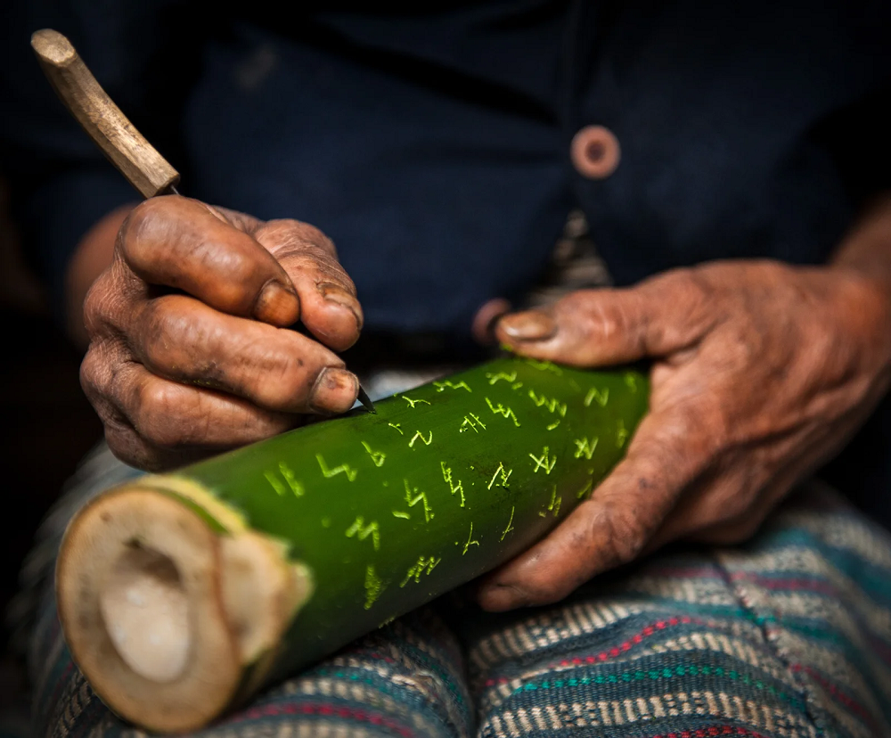

Inicio > Blog Bitácora de un bibliotecario > La forma de la memoria (06)
La forma de la memoria (06)
El poema escrito en bambú
Ambahan, surat mangyan y la vida social de la escritura
Este post forma parte de una serie que explora las múltiples formas en que las sociedades humanas han almacenado, transmitido y transformado la memoria a lo largo del tiempo, más allá de las historias restringidas centradas en los libros y la escritura. La serie aborda los archivos, los documentos y los sistemas de memoria como tecnologías históricamente situadas, moldeadas por relaciones de poder, condiciones materiales, ecologías y cosmovisiones culturales, y examina formas de transmisión frecuentemente excluidas de las narrativas dominantes sobre alfabetización y preservación: tradiciones orales, patrones tejidos, estructuras musicales, performances rituales, paisajes, cuerpos y otras infraestructuras vivas de la memoria.. Todas las entradas de esta serie pueden consultarse en el índice de esta sección.
Un poema escrito sin página
Las historias de la escritura suelen seguir el rastro de objetos concebidos para perdurar: inscripciones en piedra, tablillas de arcilla, manuscritos, libros impresos y los papeles acumulados por Estados e instituciones. Sus materiales difieren, pero comparten una ambición documental conocida. Las palabras se separan del momento del habla y se depositan sobre un soporte capaz de llevarlas a otra parte.
Entre los hanunóo mangyan del sur de Mindoro, en Filipinas, la escritura ha ocupado durante mucho tiempo un mundo material diferente. Los caracteres se graban con un cuchillo en secciones de bambú, recipientes para tabaco, contenedores de cal, instrumentos musicales, postes de viviendas y otras superficies de madera. Según algunos testimonios, también se encuentran inscripciones en bambúes que crecen junto a los senderos. La superficie escrita puede ser, por lo tanto, una posesión personal, un regalo, un utensilio, parte de una vivienda o una planta encontrada mientras se recorre el paisaje.
Una de las formas expresivas que portan estas superficies es el ambahan, una composición poética en versos de siete sílabas que se transmite mediante la recitación, la inscripción, la memoria y el uso social. El bambú hace visible el poema, pero no lo separa por completo de la voz ni de la circunstancia. Una inscripción puede conservar las palabras y, al mismo tiempo, dejar buena parte de su significado en manos del vocabulario, el ritmo, el contexto y los conocimientos del lector.
El resultado no corresponde a una tradición oral que de vez en cuando se escribe, ni a una literatura escrita cuya ejecución oral sea secundaria. El ambahan transita entre ambas. Su vida documental surge de esa conjunción.
Mindoro y el nombre mangyan
Mangyan se utiliza habitualmente como denominación colectiva de varios pueblos indígenas de Mindoro, entre ellos los iraya, alangan, tadyawan, tawbuid, bangon, buhid, hanunóo y ratagnon. El término común no debe ocultar sus diferencias. Estas comunidades hablan lenguas distintas y poseen historias y prácticas culturales propias. Entre ellas, los hanunóo y los buhid del sur de Mindoro cuentan con sistemas de escritura indígenas documentados, cada uno con sus formas particulares.
Este ensayo se ocupa de la tradición hanunóo y de la escritura conocida habitualmente como surat mangyan o surat hanunóo mangyan. El propio nombre hanunóo es una denominación externa que suele aparecer combinada con mangyan en los textos académicos e institucionales. Dentro de sus comunidades, las personas pueden referirse a sí mismas y a su lengua sencillamente como mangyan.
Esta escritura pertenece a la familia de sistemas derivados de modelos índicos que antiguamente tuvieron una difusión mucho mayor en el archipiélago filipino. La colonización española y la expansión del alfabeto latino desplazaron a la mayoría de esos sistemas. Las escrituras hanunóo y buhid de Mindoro, junto con las tradiciones tagbanua y pala'wan de Palawan, continuaron en uso. Su persistencia suele describirse como supervivencia, pero esa palabra puede hacer que la continuidad parezca pasiva. Las escrituras perduran porque las personas siguen aprendiéndolas, adaptándolas, inscribiendo, leyendo, recitando y encontrando usos para ellas.
El ambahan proporcionó uno de esos usos. La escritura se mantuvo dentro de una práctica poética y social, en lugar de quedar reservada al gobierno, el comercio o la religión institucional.
Siete sílabas
Antoon Postma, apoyándose en parte en el trabajo lingüístico de Harold Conklin y en su propio estudio prolongado de la poesía hanunóo mangyan, describió el ambahan mediante un conjunto de características recurrentes. Sus versos suelen tener siete sílabas y terminaciones rimadas. El poema se entona o casi se recita, sin una altura musical fija y, por lo general, sin acompañamiento instrumental. Su lenguaje incluye un vocabulario especializado que no se escucha habitualmente en la conversación cotidiana y suele recurrir a imágenes tomadas de las plantas, los animales, el clima, el agua, los viajes y el paisaje para hablar de manera indirecta sobre situaciones humanas.
El verso de siete sílabas constituye una regla firme, aunque no absoluta. Algunas expresiones introductorias quedan fuera del cómputo, y ciertos versos excepcionales pueden ser más largos o más cortos cuando lo exigen las palabras y el sentido. Con mayor frecuencia, la métrica moldea el lenguaje. Las palabras pueden contraerse, alargarse o ajustarse para caber en el verso. Por ello, incluso un oyente que comprende el habla hanunóo corriente puede encontrar difícil un ambahan.
Sus imágenes no poseen una interpretación universal. Una advertencia acerca de obtener miel sin sufrir picaduras puede aludir a un viaje, una competencia, un cortejo u otra empresa arriesgada, según la ocasión. El poema adquiere precisión en el encuentro entre un repertorio conocido y una circunstancia presente.
El ambahan forma parte de la vida social. Los padres pueden dirigirse a sus hijos por medio de él. Los jóvenes pueden intercambiar versos durante el cortejo. Un visitante puede pedir comida u hospitalidad. Quien se marcha puede ofrecer una despedida. Amigos y familiares pueden comunicar afecto, incertidumbre, consejos, rechazo o recuerdos. El poema brinda una forma disciplinada para expresar indirectamente algo difícil, delicado o potencialmente conflictivo.
Este uso social complica la expectativa moderna de que un poema nace como creación privada de un autor identificado y llega después a un público. El ambahan puede circular como repertorio. Una persona recuerda un verso, lo elige para una ocasión, ajusta su fuerza mediante la manera de decirlo y lo dirige a alguien que comprende tanto la forma como la situación. Composición, memoria, ejecución y reutilización pueden superponerse.
Muchos ambahan recopilados llegaron a los archivos sin que sea posible recuperar el nombre de su creador. Esto no debería convertir por definición la poesía hanunóo en folclore anónimo. Las colecciones históricas conservan los nombres de escritores mangyan como Kabal, Luyon y Balik, mientras que Ginaw Bilog obtuvo reconocimiento nacional por su dominio y preservación del ambahan. La dificultad consiste en respetar dos formas de continuidad: la de los poemas transmitidos mediante la circulación colectiva y la de aquellos asociados con escritores y custodios identificables.
Una escritura que requiere un lector
El surat mangyan es un sistema de escritura silábico. Cada carácter consonántico incluye normalmente una vocal inherente, mientras que unas pequeñas marcas llamadas kudlit modifican esa vocal. El sistema tradicional no representa de manera sistemática las consonantes al final de las sílabas ni separa todas las palabras mediante espacios. Una misma secuencia escrita puede admitir, por lo tanto, varias lecturas posibles.
Estas características no hacen que la escritura esté incompleta. Sitúan una parte de la lectura fuera de los signos visibles. Un lector competente repone las consonantes probables, identifica los límites entre palabras, reconoce el vocabulario poético y contrasta cada posibilidad con la métrica, la rima, la gramática y el sentido. El ambahan añade otra capa de dificultad, pues sus contracciones, alargamientos y términos especializados difieren del habla cotidiana.
El trabajo reciente de Ramón Guillermo sobre la lectura asistida por computadora permite observar esta estructura con una claridad poco común. Un programa puede generar posibles divisiones de palabras y lecturas a partir de una secuencia transliterada, pero el resultado sigue requiriendo juicio lingüístico y cultural. La computación puede revelar alternativas; no puede decidir por sí sola cuál es el poema. La inscripción se vuelve legible dentro de un campo de relaciones que incluye el conocimiento de la escritura, el vocabulario, la forma poética, la ocasión y la interpretación.
El surat mangyan también ha cambiado. Antoon Postma propuso un pamudpod, o signo de supresión vocálica, para representar de manera más explícita las consonantes finales. Manuales posteriores lo incorporaron a la enseñanza formal, y en consultas comunitarias se discutió qué formas de los caracteres debían utilizarse en las escuelas. Estas intervenciones revelan una escritura viva que responde a nuevos contextos. Cuando la escritura pasa de la transmisión doméstica y comunitaria a las aulas, los manuales impresos, los programas patrimoniales, las fuentes Unicode y las herramientas informáticas, las preguntas acerca de la normalización se vuelven inevitables.
Una forma normalizada puede facilitar la enseñanza y extender la escritura a nuevos medios. También puede privilegiar una solución gráfica por encima de las variantes practicadas por distintos escritores. Preservar implica aquí decidir cuánto puede cambiar una escritura sin dejar de ser reconocible para quienes la heredan.
El cuchillo y el bambú
El bambú confiere al surat mangyan parte de su carácter visual. Las letras se graban con un cuchillo puntiagudo sobre una superficie curva y resistente. El movimiento difiere del que se realiza al escribir con tinta sobre papel. El escritor sostiene, gira y estabiliza el objeto mientras conduce la hoja a través de su capa exterior. Los caracteres suelen disponerse en columnas e inscribirse en dirección opuesta al cuerpo del escritor. Su forma angulosa se ha relacionado con las exigencias de la incisión.
El objeto sobre el cual se escribe puede tener ya una vida práctica. Los tubos de bambú sirven para guardar hojas de tabaco, la cal utilizada con el betel y otras pertenencias pequeñas. Durante el cortejo, un hombre puede decorar e inscribir un recipiente antes de ofrecérselo a una mujer. Ella puede responder escribiendo en el mismo tubo y devolviéndolo en un intercambio posterior. La superficie acumula relaciones, además de lenguaje.
Un objeto semejante resulta difícil de situar dentro de la distinción habitual entre documento y artefacto. Porta un texto, pero también puede contener una sustancia, pasar de mano en mano, exhibir ornamentos y participar en una secuencia de cortejo. Su significado reside en parte en lo escrito y en parte en quién lo preparó, lo ofreció, lo recibió, respondió y lo conservó.
El bambú también impone una temporalidad particular. En el clima tropical de Mindoro, se deteriora. Se conservan pocas inscripciones antiguas en comparación con la probable magnitud de la escritura en el pasado. El registro físico tiene poca profundidad, aunque la práctica posea raíces más hondas. La escasez de ejemplos tempranos no demuestra que la escritura se utilizara poco, sino que su soporte habitual no era adecuado para convertirse en evidencia arqueológica o archivística.
Sin embargo, su carácter perecedero no convierte toda inscripción en algo deliberadamente efímero. Un objeto de bambú puede ser valorado, transportado y conservado. Ginaw Bilog guardó ambahan heredados de su padre y su abuelo y registró poemas tanto en bambú como en cuadernos. Lo que el bambú modifica es la garantía de supervivencia. La continuidad no puede depender de que un solo objeto inscrito permanezca intacto de manera indefinida. También requiere recuerdo, recitación, copia, escritura repetida y la permanencia de la capacidad de leer.
La escritura como memoria social
La relación entre inscripción y memoria se vuelve más clara al observar cómo se aprende el ambahan. Los niños hanunóo entran en contacto con la escritura a través de sus padres, la observación, la imitación y la práctica repetida sobre bambú, madera y hojas. La escritura ayuda al aprendiz a retener los versos, pero el poema no se completa mediante la decodificación silenciosa. También debe comprenderse como lenguaje y utilizarse en una situación social apropiada.
La inscripción en bambú puede funcionar como apoyo de la memoria, mensaje personal, ejercicio o instancia perdurable dentro de un intercambio hablado. Estas funciones no se excluyen entre sí. Un verso enviado durante el cortejo puede ser leído, recordado, recitado y respondido. Su forma escrita le permite viajar entre personas; su forma poética le permite permanecer en la memoria después de que el objeto haya sido devuelto, dañado o perdido.
Esta interacción explica por qué el ambahan no puede asignarse con facilidad a la oralidad o a la cultura escrita. La voz y la inscripción se refuerzan mutuamente. La longitud estricta del verso y la rima facilitan el recuerdo. La escritura sitúa una versión del poema fuera del cuerpo. La ocasión orienta la interpretación. La repetición permite que un verso circule más allá de la vida de una superficie de bambú.
La unidad documental es, en consecuencia, más amplia que la inscripción. Incluye la mano del escritor, la competencia del lector, la recitación del poema, la ocasión que lo activa y las relaciones mediante las cuales continúa siendo conocido.
Del objeto de bambú al manuscrito
Las inscripciones históricas conservadas en museos y bibliotecas atravesaron otra transformación. En 1894, A. Schadenberg reunió en Mindoro tubos de bambú inscritos que más tarde fueron depositados en Dresde. A comienzos del siglo XX, Fletcher Gardner, cirujano contratado por el Ejército de los Estados Unidos, reunió otros ejemplos. Algunos ingresaron en la Newberry Library, mientras que otro conjunto llegó finalmente a la Library of Congress.
La colección de la Library of Congress contiene setenta y una tablillas y seis cilindros de bambú reunidos entre 1904 y 1939. Su producción dependió de la colaboración entre Gardner y los hermanos Ildefonso y Eusebio Maliwanag, quienes contribuyeron a la transcripción y la traducción. Buena parte de los textos fue escrita por tres autores mangyan: Luyon, Kabal y Balik. Kabal escribió veintidós ambahan; Luyon produjo cuarenta y ocho tablillas sobre asuntos que incluían la agricultura, la educación, el dominio español y las etapas de la vida; Balik escribió los textos en prosa de seis cilindros.
Estos nombres cambian la descripción de la colección. Los objetos no son simplemente "manuscritos mangyan en bambú" reunidos por un estudioso estadounidense. Son obras escritas por personas concretas y hechas inteligibles gracias al trabajo de colaboradores filipinos. La posición institucional de Gardner y las circunstancias coloniales de la recopilación siguen siendo pertinentes, pero no agotan la historia de los objetos.
Una vez fuera de Mindoro, el bambú que en circunstancias ordinarias se habría deteriorado se convirtió en un material manuscrito excepcional, protegido mediante control ambiental. El archivo institucional prolongó la vida física de las inscripciones y, al mismo tiempo, las separó de las situaciones sociales en las que esa escritura había funcionado. La catalogación produjo títulos, autores, fechas, números de pieza, transliteraciones e imágenes digitales. Estas adiciones permiten buscar en la colección y hacen posible que lectores dispersos la estudien. También crean una segunda organización documental alrededor de la primera.
El objeto digital muestra ahora varias capas simultáneas: los signos que un escritor mangyan cortó en el bambú, una transliteración negociada por intermediarios, una traducción al inglés, un registro de catálogo y una imagen de alta resolución ofrecida a través de una institución de alcance mundial. Cada capa aumenta una forma de accesibilidad y, a la vez, se aleja un poco más de la escena original de uso.
El bambú preservado no constituye, por lo tanto, un rescate completo ni un simple vestigio colonial. Es evidencia de escritura, autoría, colaboración, desplazamiento, interpretación y transformación institucional. Su historia no puede narrarse únicamente a partir de la superficie incisa.
Cuando una escritura viva se convierte en patrimonio
En 1999, la UNESCO inscribió las escrituras filipinas —hanunoo, buid, tagbanua y pala'wan— en el Registro Memoria del Mundo. Las instituciones nacionales y las organizaciones culturales han apoyado la documentación, la elaboración de manuales, la enseñanza escolar, los talleres, la digitalización y otras iniciativas destinadas a mantenerlas en uso. Este reconocimiento otorga visibilidad y recursos a tradiciones amenazadas por el desuso y el predominio del alfabeto latino.
También modifica la categoría mediante la cual se percibe la escritura. Una práctica inserta en la poesía, el cortejo, la enseñanza y los objetos cotidianos se convierte en "patrimonio documental". Las inscripciones en bambú ingresan en vitrinas. Las formas de los caracteres pasan a cuadros y fuentes tipográficas. Los ambahan entran en colecciones numeradas y antologías traducidas.
El reconocimiento de Ginaw Bilog como Manlilikha ng Bayan, o Tesoro Nacional Viviente, en 1993 situó en el centro de la preservación a un portador de la tradición y no a un objeto antiguo. Bilog conservó colecciones heredadas, registró poemas y compartió la tradición con públicos mangyan y no mangyan. Su labor muestra que la continuidad recae en personas que recuerdan, escriben, enseñan y deciden cuándo y cómo debe circular un poema.
Ninguna declaración patrimonial puede realizar esas tareas por ellas. Una escritura puede quedar registrada internacionalmente mientras disminuye el número de jóvenes que aprenden a utilizarla. Miles de poemas pueden digitalizarse mientras su vocabulario especializado se vuelve cada vez más difícil de comprender. Una fuente tipográfica puede reproducir todos los caracteres y seguir siendo incapaz de proporcionar el conocimiento mediante el cual un ambahan cobra sentido.
La preservación institucional y la transmisión comunitaria responden a peligros diferentes. La primera puede proteger de la pérdida física los objetos, las imágenes, las descripciones y los materiales de investigación. La segunda mantiene la competencia, la ocasión, la autoridad y la posibilidad de nuevos usos. El futuro del surat mangyan depende de la relación entre ambas, incluido el grado en que las comunidades mangyan conserven su autoridad sobre la enseñanza, la normalización, la interpretación y el acceso.
El poema más allá del bambú
El ambahan demuestra que la escritura no siempre produce un texto autónomo. Los signos siguen dependiendo de un lector capaz de reponer las consonantes no marcadas, reconocer los límites entre palabras, comprender el lenguaje especializado, escuchar el verso de siete sílabas, seguir la rima y vincular las imágenes simbólicas con una situación humana concreta.
El bambú le da cuerpo al poema. Permite que las palabras sean transportadas, intercambiadas, respondidas, recopiladas y preservadas. Al mismo tiempo, su vulnerabilidad impide que el soporte se convierta en el único garante de la continuidad. El poema también debe sobrevivir mediante la voz, la memoria, el aprendizaje y nuevas inscripciones.
Cuando un tubo de bambú ingresa en una biblioteca, una parte de esa continuidad adquiere una durabilidad excepcional. Las incisiones pueden permanecer después de que el escritor, el destinatario y la ocasión hayan desaparecido. Lo que sobrevive es invaluable, pero ha cambiado. La institución preserva el objeto como manuscrito; la tradición viva preserva la capacidad de hacer hablar a los signos.
Aquí, la forma de la memoria no es puramente oral ni está contenida por completo en la escritura. Se encuentra en el tránsito entre la hoja de un cuchillo y una superficie, un verso y una voz, una persona y otra, un repertorio heredado y una necesidad presente. El bambú puede portar el poema durante un tiempo. Su vida más prolongada depende de quienes puedan volver a leerlo.
Bibliografía
- Catapang, Emerenciana Lorenzo (2014). "Reviving the Hanunuo and Buhid Mangyan Syllabic Scripts of the Philippines." Paper presented at the International Workshop on Endangered Scripts of Island Southeast Asia, Tokyo.
- Conklin, Harold C. (1953). Hanunóo-English Vocabulary. Berkeley and Los Angeles: University of California Press.
- Guillermo, Ramón (2023). "Magkunkuno ti Makina: Python Code for the Computer-Assisted Reading of Hanunuo Mangyan Ambahan." Philippine Studies: Historical and Ethnographic Viewpoints, 71 (2), pp. 177-210.
- Kueh, Joshua (2023). "Now Online: Mangyan Bamboo Collection from the Philippines at the Library of Congress." 4 Corners of the World, Library of Congress, February 1.
- National Museum of the Philippines (2022). "Courtship and Expressions of Love among the Hanunoo Mangyan of Southern Mindoro." February 14.
- National Museum of the Philippines (2022). "Manlilikha ng Bayan Ginaw Bilog." January 3.
- Postma, Antoon (1965). "The Ambahan: A Mangyan-Hanunoo Poetic Form." Asian Studies, 3 (1), pp. 71-85.
- Postma, Antoon (1971). "Contemporary Mangyan Scripts." Philippine Journal of Linguistics, 2 (1), pp. 1-12.
- Postma, Antoon (1995). "The Ambahan: A Mangyan Poem of Mindoro." Philippine Quarterly of Culture and Society, 23 (1), pp. 44-77.
- Postma, Antoon (2005). Mangyan Treasures: The Ambahan: A Poetic Expression of the Mangyans of Southern Mindoro, Philippines. 3rd ed. Calapan City: Mangyan Heritage Center.
- UNESCO (1999). "Philippine Paleographs (Hanunoo, Buid, Tagbanua and Pala'wan)." Memory of the World International Register.